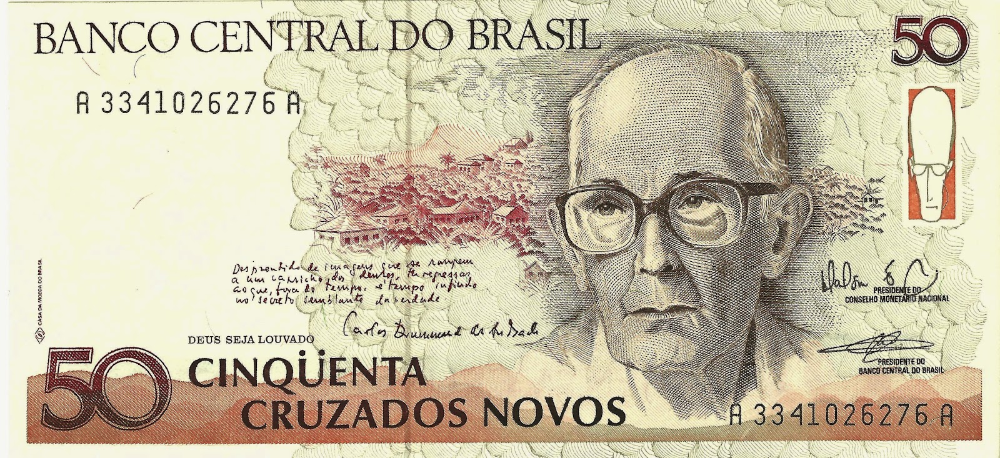
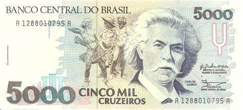
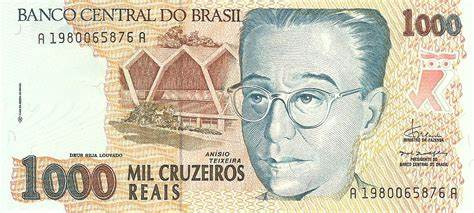
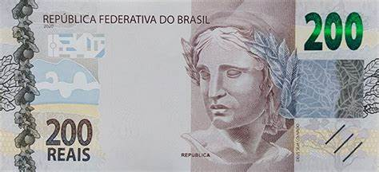
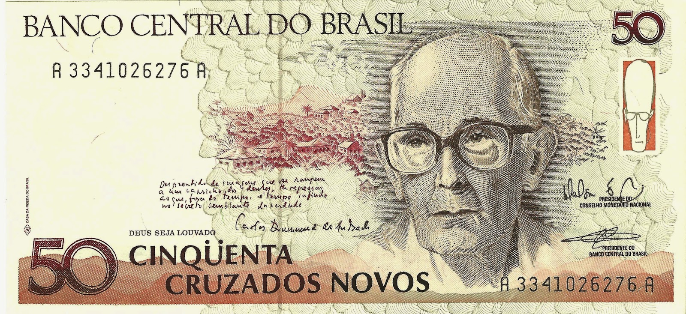
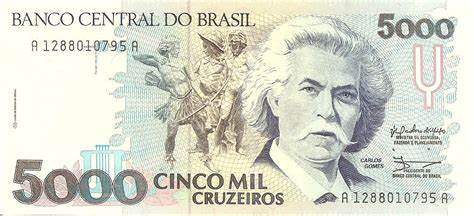
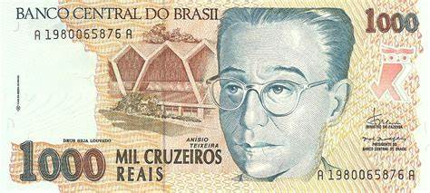
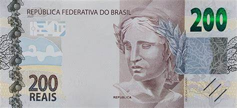
Moedas do Brasil
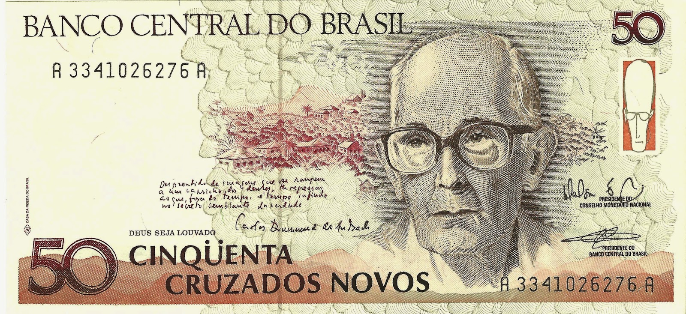
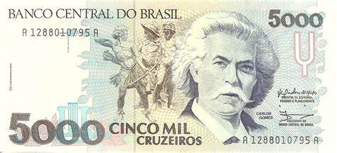
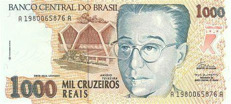
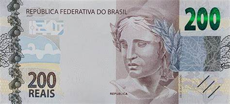
O nome "réis" vem de real, moeda usada por Portugal no início da colonização.
Oficialmente, a moeda portuguesa passou a circular no Brasil em 1568.
A primeira vez em que se utilizou "réis" num documento foi em 1575, apesar da moeda só ter sido oficializada em 1645.
Governantes
Durante o período colonial, o Brasil era uma colônia de Portugal e, portanto, estava sob o comando dos governadores e vice-reis nomeados pela coroa portuguesa.
Já durante o Império do Brasil, que teve início em 1822, o país teve diversos imperadores, como Pedro I, Pedro II e a Princesa Isabel, que governaram o Brasil em diferentes momentos em que a moeda "Réis" foi utilizada.
Comparações

O cruzeiro foi criado em 1942, como parte de um plano de reforma monetária que visava combater a inflação e estabilizar a economia brasileira.
A nova moeda substituiu o antigo réis e foi emitida em notas e moedas de diferentes valores.
Durante sua existência, o cruzeiro passou por várias mudanças em sua denominação e valor, devido à inflação e à desvalorização da moeda.
Governates
Durante o período em que o Cruzeiro foi a moeda oficial do Brasil, entre 1942 e 1967, o país teve vários governantes, cada um com seu próprio estilo e políticas econômicas.
Abaixo estão alguns dos principais líderes políticos do Brasil durante o período do Cruzeiro:
Getúlio Vargas: Getúlio Vargas foi presidente do Brasil por dois mandatos não consecutivos, de 1930 a 1945 e de 1951 a 1954.
Eurico Gaspar Dutra: Eurico Gaspar Dutra foi presidente do Brasil entre 1946 e 1951.
Juscelino Kubitschek: Juscelino Kubitschek foi presidente do Brasil entre 1956 e 1961.
Comparações
Cruzeiro Novo (1967 e 1970)
Ela foi criada para substituir o antigo Cruzeiro, que sofria de uma inflação muito alta.
A inflação do Cruzeiro era tão elevada que o governo decidiu criar uma nova moeda com um valor menor para tentar controlar a inflação.
Na época de sua introdução, o Cruzeiro Novo foi avaliado em US$ 1,08.
Governates
Durante o período de circulação do Cruzeiro Novo, houve uma série de presidentes e governantes no país.
Alguns dos principais governantes dessa época foram:
Artur da Costa e Silva: Ele foi presidente do Brasil de 1967 a 1969
Emílio Garrastazu Médici: Ele foi presidente do Brasil de 1969 a 1974
Ernesto Geisel: Ele foi presidente do Brasil de 1974 a 1979
João Figueiredo: Ele foi presidente do Brasil de 1979 a 1985
Comparaçõs
Cruzeiro (1970 a 1986.)
A criação do Cruzeiro foi uma tentativa do governo brasileiro de estabilizar a economia e controlar a inflação, mas infelizmente não foi bem-sucedida.
Durante os anos em que esteve em circulação, o valor do Cruzeiro foi drasticamente reduzido em relação ao dólar americano, tornando-se uma das moedas mais desvalorizadas do mundo.
Isso resultou em uma inflação galopante e em uma série de planos econômicos fracassados para tentar conter a crise.
Governantes
Durante o período em que o Cruzeiro foi a moeda oficial do Brasil, houve vários governantes que estiveram à frente do país.
Aqui está uma lista dos principais presidentes do Brasil durante o período de 1970 a 1986:
Emílio Garrastazu Médici (1969-1974)
Ernesto Geisel (1974-1979)
João Figueiredo (1979-1985)
José Sarney (1985-1990)
Comparações
Cruzado (1986 e 1989)
O Cruzado foi criado como parte de um plano de estabilização econômica, conhecido como Plano Cruzado, que buscava conter a inflação descontrolada que assolava o país na época.
O Cruzado foi introduzido em 28 de fevereiro de 1986, substituindo o Cruzeiro (Cr$) como moeda oficial do país.
Governantes
O período do Cruzado (Cz$) no Brasil foi marcado por três governantes, que foram:
José Sarney: ele foi o presidente do Brasil durante a introdução do Cruzado em 1986.
Itamar Franco: ele foi o vice-presidente de José Sarney e assumiu a presidência do Brasil em
Fernando Collor de Mello: ele foi o presidente do Brasil entre 1990 e 1992.
Comparações
Cruzado novo(1989 e 1990)
O Cruzado Novo (NCz$) foi uma moeda que circulou no Brasil entre 1989 e 1990, durante o governo de José Sarney.
Ela foi criada como uma tentativa de conter a hiperinflação e substituiu o Cruzado (Cz$), que havia perdido seu valor rapidamente devido ao aumento dos preços.
Governantes
Durante o período em que o Cruzado Novo (NCz$) circulou no Brasil, os governantes foram:
José Sarney (1989-1990)
Fernando Collor de Mello (1990-1992)
Comparações

Cruzeiro (1990-1993)
O Cruzeiro foi a moeda oficial do Brasil em dois períodos diferentes, sendo o primeiro de 1942 a 1967, e o segundo de 1990 a 1993.
A segunda edição do Cruzeiro foi criada durante a presidência de Fernando Collor de Mello, em meio a uma grave crise econômica, como parte de um pacote de medidas para tentar conter a inflação.
Governantes
Durante o período do Cruzeiro de 1990 a 1993, houve três presidentes do Brasil:
Abaixo estão alguns dos principais líderes políticos do Brasil durante o período do Cruzeiro:
Fernando Collor de Mello (1990-1992)
Itamar Franco (1992-1995)
Fernando Henrique Cardoso (1995-2002)
Comparações
Cruzeiro real (1993 e 1994)
O Cruzeiro Real foi a moeda oficial do Brasil entre 1993 e 1994, substituindo o Cruzeiro (Cr$) e antecedendo a introdução do Real (R$).
O Cruzeiro Real foi criado em 1993 como uma medida de combate à hiperinflação que assolava o país na época.
No entanto, a hiperinflação continuou aumentando e, em 1994, o governo brasileiro decidiu implementar um novo plano econômico que incluía a criação de uma nova moeda, o Real.
Governantes
Durante o período em que o Cruzeiro Real foi utilizado no Brasil (1993-1994), tivemos dois presidentes:
Fernando Collor de Mello (1990-1992)
Itamar Franco (1992-1995)
Comparaçõs
Reais(1994 até hoje)
Atualmente, as cédulas em circulação no Brasil são denominadas em Real (R$).
As cédulas do Real são produzidas em seis valores:R$ 2, R$ 5, R$ 10, R$ 20, R$ 50 e R$ 100.
Além disso, existem cédulas de Real antigas, que já não são mais produzidas e foram substituídas por novas versões com elementos de segurança aprimorados.
Governantes
Desde a implantação do Real como moeda oficial do Brasil em 1994, o país teve os seguintes presidentes:
Itamar Franco (1992-1995)
Fernando Henrique Cardoso(1995-2003)
Luiz Inácio Lula da Silva(2003-2011)
Dilma Rousseff(2011-2016)
Michel Temer (2016-2018)
Jair Bolsonaro(desde 2019)
Luiz Inácio Lula da Silva (Atual presidente)
Comparações